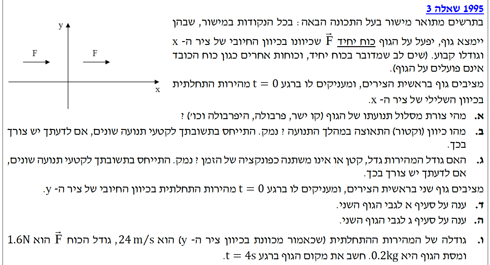
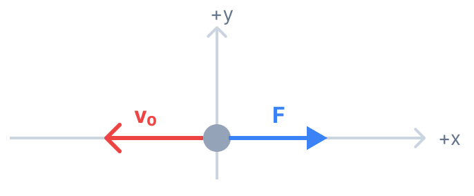
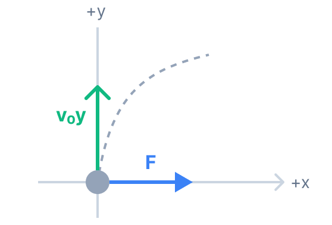

פתרון מודרך צעד-אחר-צעד

גוף נמצא בראשית הצירים ( \( x_0 = 0, y_0 = 0 \) ). פועל עליו כוח יחיד \( \vec{F} \) שכיוונו חיובי לאורך ציר ה-x וגודלו קבוע. ברגע \( t=0 \) מעניקים לגוף מהירות התחלתית \( \vec{v}_0 \) בכיוון השלילי של ציר ה-x. כלומר, במרחב תיאורטי זה לא קיימים כוחות נוספים כלל (אין כוח כובד, אין כוח נורמל ואין משטח חיכוך). הכוח הנתון הוא היחיד שפועל.

את צורת מסלול תנועתו של הגוף (לדוגמה: קו ישר, פרבולה, וכו').
הכוח השקול הפועל על הגוף (ולכן גם התאוצה) נמצאים אך ורק לאורך ציר ה-x. כמו כן, וקטור המהירות ההתחלתית נמצא אך ורק לאורך ציר ה-x. מכיוון שאין לגוף שום רכיב מהירות ושום רכיב תאוצה בכיוון ציר ה-y, הוא לעולם לא ינוע מחוץ לציר ה-x.
לכן, התנועה מוגבלת למימד אחד בלבד.
הכוח היחיד הפועל על הגוף, \( \vec{F} \), הוא קבוע בגודלו ובכיוונו (בכיוון החיובי של ציר ה-x) במהלך כל התנועה.
את כיוון התאוצה במהלך התנועה, ואם יש צורך להפריד את התשובה לקטעי תנועה שונים.
על פי החוק השני של ניוטון, כיוון התאוצה \( \vec{a} \) תמיד זהה לחלוטין לכיוון הכוח השקול \( \Sigma\vec{F} \) הפועל על הגוף (שכן המסה \( m \) היא סקלר חיובי קבוע). מכיוון שהכוח קבוע בכיוונו (בכיוון החיובי של ציר ה-x) לכל אורך התנועה, גם התאוצה נשארת קבועה בכיוונה לכל אורך התנועה. שינוי במגמת המהירות (מהתקדמות שמאלה להתקדמות ימינה) אינו משפיע על כיוון הכוח השקול.
מהירות התחלתית בכיוון שלילי (\( -x \)), תאוצה קבועה בכיוון חיובי (\( +x \)).
האם גודל המהירות גדל, קטן או אינו משתנה, תוך התייחסות לקטעי התנועה השונים אם נדרש.
כאן אנו חייבים לחלק את התנועה לשני שלבים נפרדים:
שלב 1 (מההתחלה ועד העצירה הרגעית): הגוף נע שמאלה (מהירות שלילית) בעוד הכוח דוחף אותו ימינה (תאוצה חיובית). כאשר וקטור המהירות ווקטור התאוצה מנוגדים זה לזה, גודל המהירות קטן. הגוף ממשיך לנוע שמאלה לאט יותר ויותר, עד שברגע מסוים מהירותו מתאפסת (עצירה רגעית).
שלב 2 (לאחר העצירה הרגעית): הגוף מתחיל לנוע חזרה ימינה (מהירות חיובית). הכוח ממשיך לדחוף אותו ימינה (תאוצה חיובית). כעת, וקטור המהירות ווקטור התאוצה הם באותו הכיוון. במצב כזה, גודל המהירות גדל (הגוף תופס תאוצה).
מציבים גוף שני בראשית הצירים ( \( x_0 = 0, y_0 = 0 \) ). ברגע \( t=0 \) מעניקים לו מהירות התחלתית בכיוון החיובי של ציר ה-y (\( \vec{v}_0 = (0, v_{0y}) \)). הכוח ממשיך לפעול בכיוון החיובי של ציר ה-x כפי שהיה.

את צורת מסלול תנועתו של הגוף השני (בדומה לשאלה בסעיף א').
ננתח את התנועה בשני הצירים בנפרד (על פי עקרון בלתי תלות התנועות של גלילאו):
ציר ה-y: אין כוחות שפועלים בציר זה (\( \Sigma F_y = 0 \)), לכן אין תאוצה. הגוף ינוע במהירות קבועה: \( y(t) = v_{0y} \cdot t \).
ציר ה-x: פועל כוח קבוע המקנה תאוצה קבועה, והמהירות ההתחלתית בציר זה היא אפס. משוואת המיקום: \( x(t) = \frac{1}{2}a_x t^2 \).
שילוב של תנועה קצובה בציר אחד, עם תנועה שוות-תאוצה בציר הניצב לו, יוצר תמיד מסלול של פרבולה.
המהירות בציר y קבועה (\( v_y = v_{0y} \)). בציר x קיימת תאוצה קבועה והמהירות מתחילה מאפס.
האם גודל המהירות של הגוף השני (הווקטור השקול) גדל, קטן או אינו משתנה.
נבדוק מה קורה לרכיבי המהירות כפונקציה של הזמן:
רכיב המהירות בציר y נשאר קבוע לאורך כל התנועה: \( v_y(t) = v_{0y} \).
רכיב המהירות בציר x גדל בערכו המוחלט עם הזמן עקב התאוצה הקבועה: \( v_x(t) = a_x \cdot t \).
גודל המהירות הכוללת הוא אורך היתר במשולש שניצביו הם \( v_x \) ו-\( v_y \):
\[ |\vec{v}| = \sqrt{ (a_x \cdot t)^2 + v_{0y}^2 } \]
מכיוון שהזמן \( t \) הולך וגדל, הביטוי בתוך השורש הולך וגדל.
את מקום הגוף ברגע \( t = 4 \text{ s} \) (כלומר, יש לחשב את הקואורדינטה \( x \) והקואורדינטה \( y \)).
תחילה, נחשב את תאוצת הגוף בציר ה-x לפי החוק השני של ניוטון:
\[ a_x = \frac{\Sigma F_x}{m} = \frac{1.6}{0.2} = 8 \text{ m/s}^2 \]
(בציר ה-y אין כוחות ולכן \( a_y = 0 \)).
כעת נחשב את מיקום הגוף עבור כל ציר בנפרד, לאחר \( t=4\text{s} \):
חישוב בציר ה-x:
חישוב בציר ה-y: